11 demo
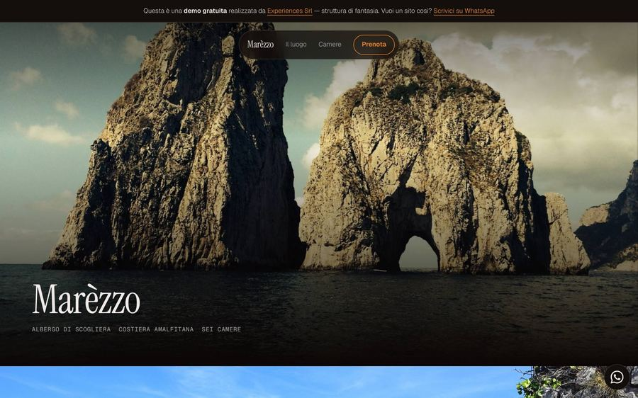
Marèzzo — cinematica
Scorrimento lento, fotografie a piena pagina, il testo che entra una riga alla volta. Per chi vende un’atmosfera prima di una camera.
Apri la demo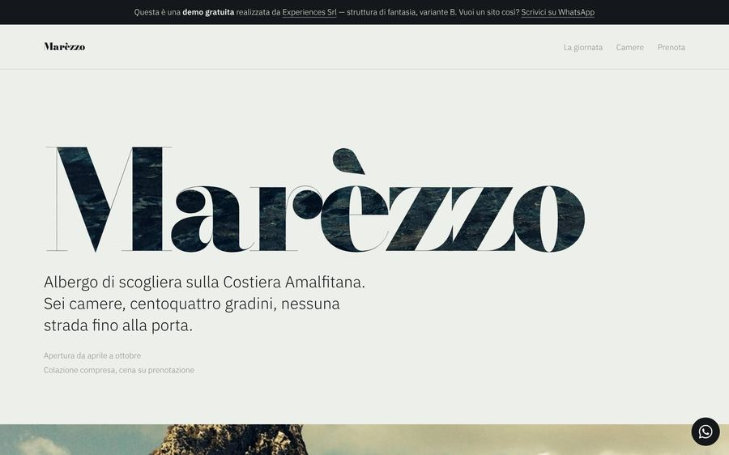
Marèzzo — immersiva
Stesso albergo, impianto opposto: titoli enormi con la fotografia dentro le lettere. Le due varianti esistono per far scegliere il tono al cliente, non a noi.
Apri la demo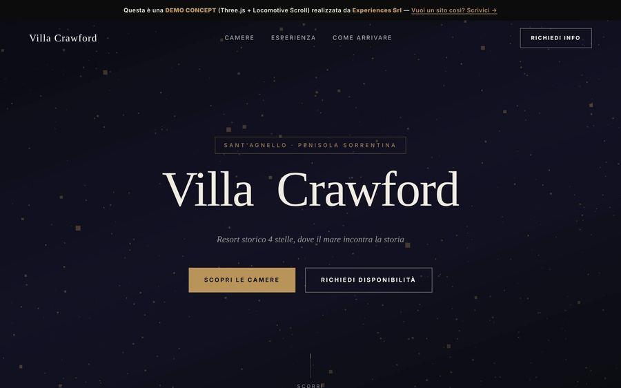
Villa Crawford — 3D
Scena tridimensionale e scorrimento morbido: lo sfondo reagisce al movimento. Il massimo dell’effetto, con la manutenzione che comporta.
Apri la demo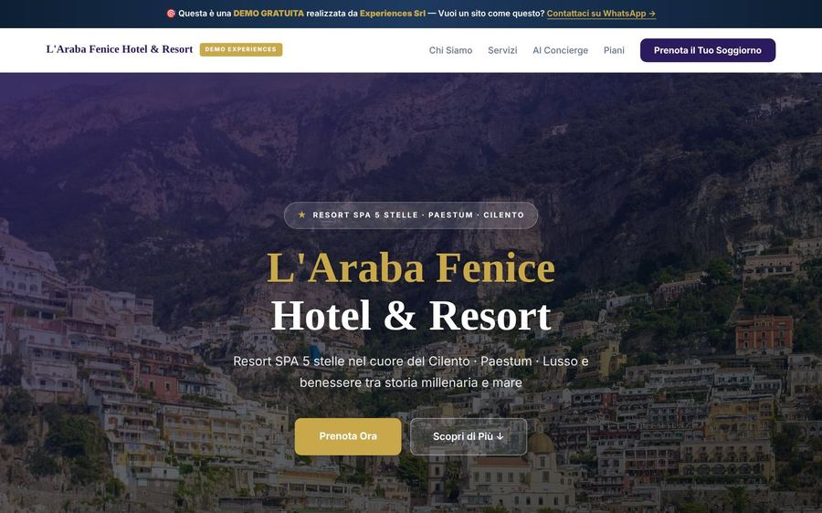
L’Araba Fenice
L’impianto che usiamo di base: hero, servizi, concierge AI, piani, prenotazione. Sotto a oltre centotrenta demo c’è questo — cambiano fotografie e testi.
Apri la demo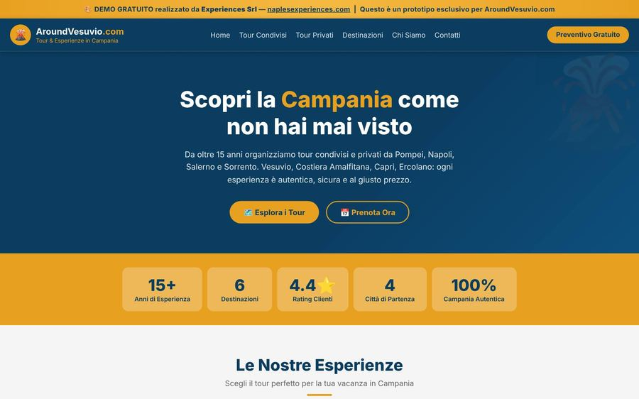
AroundVesuvio
Tour condivisi e tour privati separati fin dal menu, destinazioni, partenze da quattro città. L’impianto cambia perché cambia la domanda: non «dove dormo» ma «cosa faccio».
Apri la demo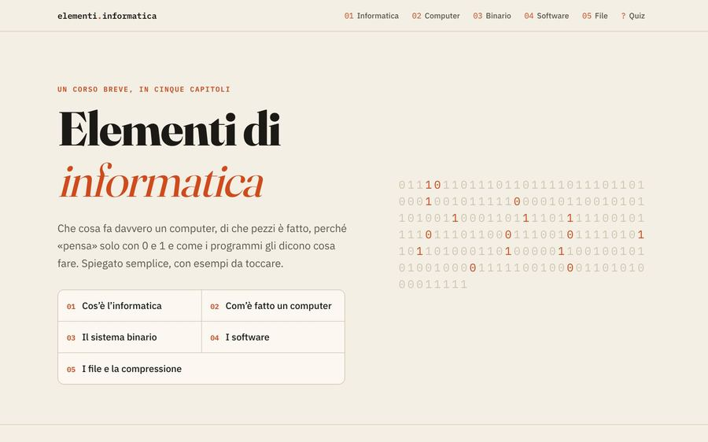
Elementi di informatica
Non una brochure di un corso: il corso. Esercizi che rispondono, aree da disegnare, verifica a fine capitolo.
Apri la demo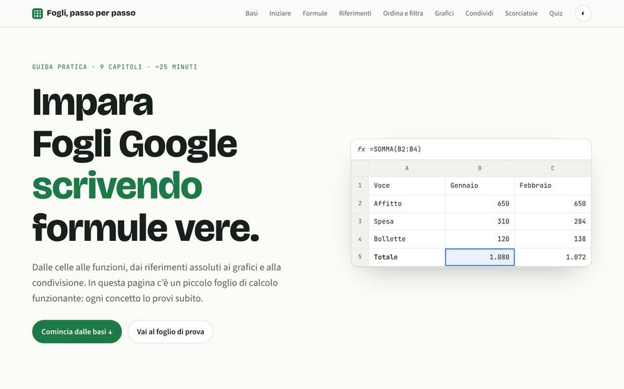
Fogli Google, passo per passo
Come si tiene leggibile un testo lungo: indice che segue lo scorrimento, passaggi numerati, niente che distragga.
Apri la demo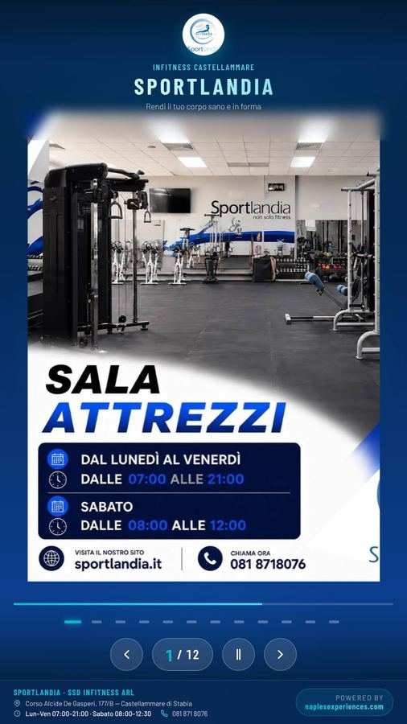
Sportlandia — totem
Un 42 pollici verticale all’ingresso della palestra. Niente mouse, niente tastiera: si tocca, e dopo un minuto di inattività torna da solo all’inizio.
Apri la demo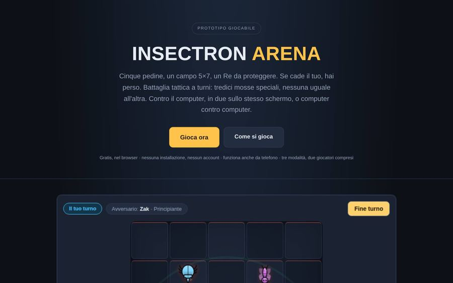
Insectron Arena
Un gioco tattico a turni dentro una pagina. Serve a mostrare fin dove si può spingere il browser senza far installare niente a nessuno.
Apri la demo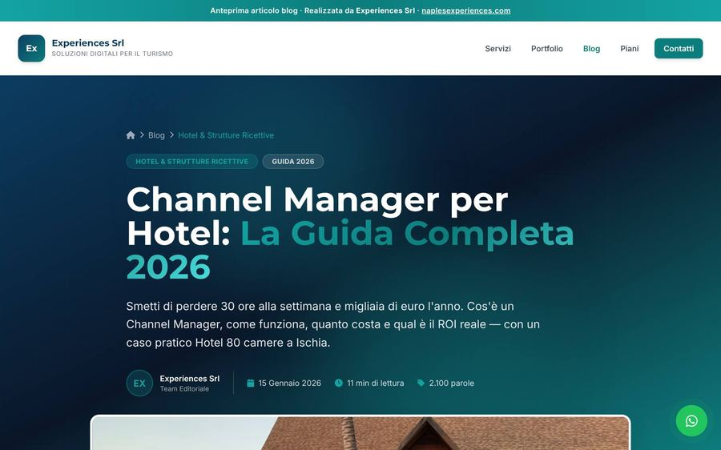
Un articolo lungo
Come impaginiamo tremila parole perché si leggano davvero: indice laterale, tabelle di confronto, riquadri di sintesi.
Apri la demo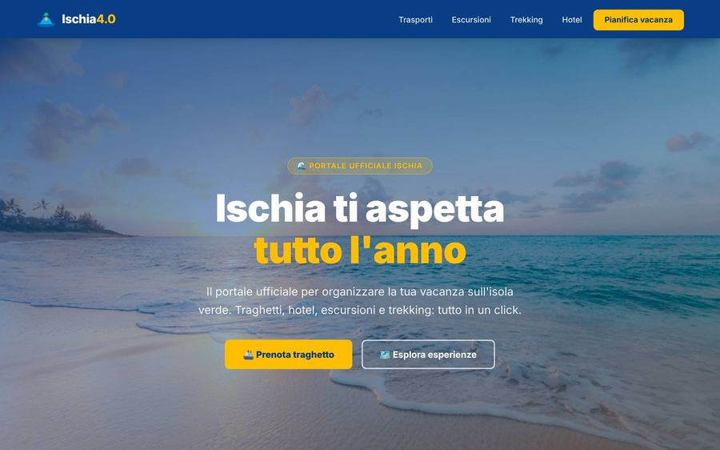
Ischia 4.0
Pagina sola, obiettivo solo. Nessuna navigazione in cima: tutto quello che c’è porta nello stesso punto.
Apri la demoNessuna di queste è il tuo sito
Sono dimostrazioni: strutture inventate, testi scritti da noi, fotografie di repertorio. Servono a far vedere come lavoriamo prima che tu debba fidarti sulla parola. Se una ti somiglia, partiamo da lì.